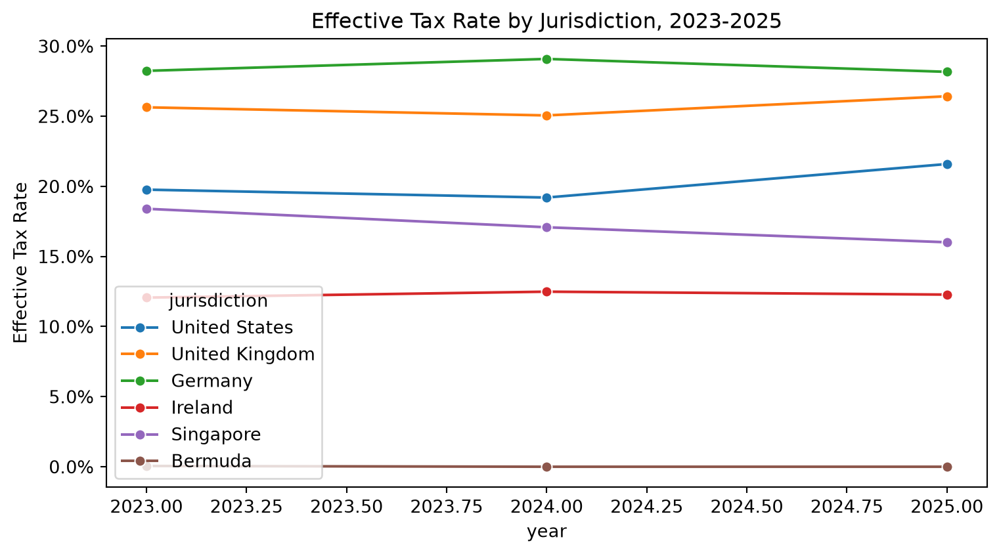
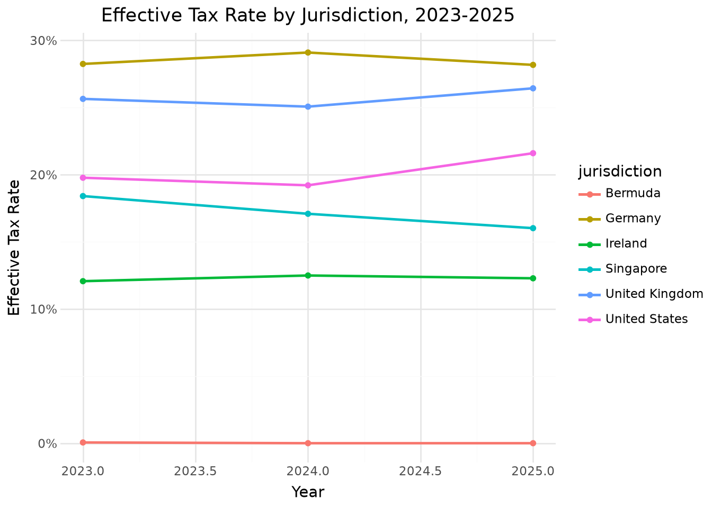
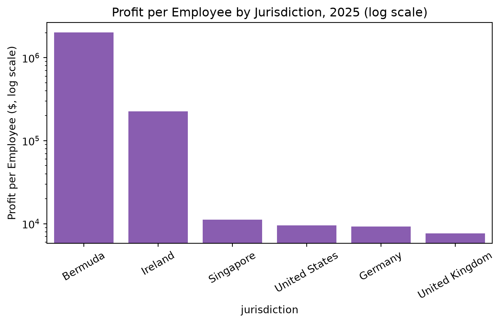
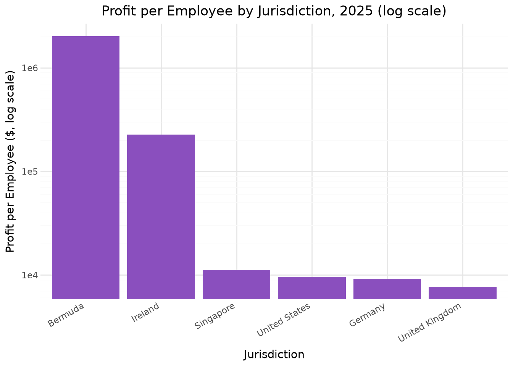

By the end of this chapter, you should be able to:
Compute effective tax rates (ETR) at the jurisdiction and consolidated level
Build a rate reconciliation bridging statutory to effective tax rates
Identify disproportionate profit allocation across jurisdictions using profit-per-employee and profit-to-revenue metrics
Recompute expected sales tax from transaction-level data and flag compliance discrepancies
Apply both pandas and polars to multi-jurisdiction and transaction-level tax data
Recognize the limits of a chosen materiality threshold when flagging compliance exceptions
12.1 Two Kinds of Tax Analytics
This chapter covers two related but distinct areas of tax analytics:
Income tax analytics — analyzing effective tax rates across jurisdictions and over time, and understanding what drives the gap between a company’s statutory and effective tax rate
Indirect tax compliance testing — recomputing sales tax at the transaction level to verify it was calculated and collected correctly
We’ll use two datasets: tax_provision_by_jurisdiction.csv (a multinational company’s income tax provision by country and year) and sales_tax_test_transactions.csv (300 transaction-level sales with sales tax detail).
import pandas as pdtax_pd = pd.read_csv("data/tax_provision_by_jurisdiction.csv")tax_pd
year
jurisdiction
revenue
employees
pretax_income
statutory_rate
tax_expense
revenue_per_employee
effective_tax_rate
profit_per_employee
0
2023
United States
21329009
420
3673682
0.210
726076
50783
0.197643
8.746862e+03
1
2023
United Kingdom
7460194
160
1115781
0.250
286045
46626
0.256363
6.973631e+03
2
2023
Germany
6204232
130
1097064
0.300
309781
47725
0.282373
8.438954e+03
3
2023
Ireland
2294657
35
7349868
0.125
886646
65562
0.120634
2.099962e+05
4
2023
Singapore
3203999
60
400186
0.170
73632
53400
0.183994
6.669767e+03
5
2023
Bermuda
208878
4
5964247
0.000
3310
52219
0.000555
1.491062e+06
6
2024
United States
20910072
420
3165520
0.210
607806
49786
0.192008
7.536952e+03
7
2024
United Kingdom
7471163
160
1034235
0.250
259165
46695
0.250586
6.463969e+03
8
2024
Germany
6447472
130
842126
0.300
244953
49596
0.290875
6.477892e+03
9
2024
Ireland
2609897
35
8353045
0.125
1043015
74568
0.124866
2.386584e+05
10
2024
Singapore
3714296
60
515627
0.170
88072
61905
0.170806
8.593783e+03
11
2024
Bermuda
187779
4
5712833
0.000
0
46945
0.000000
1.428208e+06
12
2025
United States
23445443
420
4022515
0.210
868518
55822
0.215914
9.577417e+03
13
2025
United Kingdom
8220750
160
1229443
0.250
324860
51380
0.264233
7.684019e+03
14
2025
Germany
7095661
130
1200687
0.300
338194
54582
0.281667
9.236054e+03
15
2025
Ireland
2332291
35
7921309
0.125
972589
66637
0.122781
2.263231e+05
16
2025
Singapore
3781970
60
671177
0.170
107459
63033
0.160105
1.118628e+04
17
2025
Bermuda
266682
4
8037523
0.000
0
66670
0.000000
2.009381e+06
import polars as pltax_pl = pl.read_csv("data/tax_provision_by_jurisdiction.csv")
Our fictional company operates in six jurisdictions with very different statutory tax rates, from Bermuda (0%) to Germany (30%).
12.2 Effective Tax Rate by Jurisdiction
The effective tax rate (ETR) is tax expense divided by pretax income — the tax rate a company actually experiences, which can differ substantially from any jurisdiction’s statutory rate due to credits, deductions, and other adjustments.
Most jurisdictions show an effective rate reasonably close to their statutory rate. Ireland and Bermuda, however, show very low effective rates — but that alone isn’t unusual, since their statutory rates are also low (12.5% and 0%, respectively). The more interesting question is how much profit is being taxed at those low rates, relative to the actual business activity happening there.
import seaborn as snsimport matplotlib.pyplot as pltplt.figure(figsize=(8, 4.5))sns.lineplot(data=tax_pd, x="year", y="effective_tax_rate", hue="jurisdiction", marker="o")plt.title("Effective Tax Rate by Jurisdiction, 2023-2025")plt.ylabel("Effective Tax Rate")plt.gca().yaxis.set_major_formatter(plt.matplotlib.ticker.PercentFormatter(1.0))plt.tight_layout()plt.show()

from plotnine import*( ggplot(tax_pd, aes(x="year", y="effective_tax_rate", color="jurisdiction"))+ geom_line(size=1)+ geom_point()+ scale_y_continuous(labels=lambda l: [f"{v:.0%}"for v in l])+ labs(title="Effective Tax Rate by Jurisdiction, 2023-2025", x="Year", y="Effective Tax Rate")+ theme_minimal())

Every major operating jurisdiction (US, UK, Germany, Singapore) tracks fairly close to a stable band each year. Ireland and Bermuda sit visibly apart, near the bottom of the chart — consistent with their low statutory rates, but worth keeping in mind as we look at profit allocation next.
The consolidated ETR is roughly 11-12% — noticeably lower than any individual major jurisdiction’s statutory rate (21% to 30%). This gap is the first clue that something in the jurisdictional mix is pulling the blended rate down substantially.
12.4 Spotting Disproportionate Profit Allocation
A standard analytical test for profit-shifting risk compares each jurisdiction’s share of profit to its share of real economic activity — typically proxied by revenue or headcount. A jurisdiction booking far more profit than its business substance would suggest is a classic red flag.
Ireland and Bermuda together account for only about 6% of consolidated revenue and under 5% of employees — yet they generate roughly 68-72% of consolidated pretax profit. This is exactly the kind of mismatch that international tax authorities (and analysts studying a company’s tax footprint) look for: profit concentrated in low-tax jurisdictions far out of proportion to the actual business substance (people, sales activity) located there. It directly explains why the consolidated ETR is so much lower than any major operating jurisdiction’s statutory rate — a small, low-taxed slice of the business is generating most of the reported profit.
12.4.1 Profit per Employee: A Sharper View of the Same Pattern
Bermuda’s average profit per employee is roughly $1.6 million — around 150-200 times higher than the US, UK, or Germany, where profit per employee sits in the $7,000-$9,500 range. No plausible business model explains a handful of employees in Bermuda generating that much profit relative to hundreds of employees running substantial operations elsewhere; this ratio, on its own, is one of the strongest quantitative signals in this chapter.
plt.figure(figsize=(7, 4.5))sns.barplot(data=snapshot_2025, x="jurisdiction", y="profit_per_employee", color="#8a4fbe")plt.yscale("log")plt.title("Profit per Employee by Jurisdiction, 2025 (log scale)")plt.ylabel("Profit per Employee ($, log scale)")plt.xticks(rotation=30)plt.tight_layout()plt.show()

( ggplot(snapshot_2025, aes(x="reorder(jurisdiction, -profit_per_employee)", y="profit_per_employee"))+ geom_col(fill="#8a4fbe")+ scale_y_log10()+ labs(title="Profit per Employee by Jurisdiction, 2025 (log scale)", x="Jurisdiction", y="Profit per Employee ($, log scale)")+ theme_minimal()+ theme(axis_text_x=element_text(rotation=30, hjust=1)))

Note the log scale on this chart — without it, Bermuda’s bar would be so tall that every other jurisdiction’s bar would be visually indistinguishable from zero, which itself illustrates just how extreme the gap is.
12.5 Rate Reconciliation
Rate reconciliation is a formal financial statement disclosure that explains the mathematical difference between a company’s domestic statutory income tax rate and its effective tax rate (ETR). For multinational corporations, it highlights how global operations, foreign tax differentials, and international provisions shift tax burdens.
Public companies disclose a rate reconciliation — a bridge explaining the difference between tax expense at the home-country statutory rate and the actual tax expense reported. Let’s build a simplified version, using the U.S. statutory rate (21%) as the baseline.
Over the three years in this dataset, booking profit in Bermuda and Ireland rather than at the US statutory rate reduced consolidated tax expense by roughly $4.1 million and $2.1 million, respectively — figures that would typically appear as a “foreign rate differential” line item in a real rate reconciliation footnote.
Switching to indirect tax: sales_tax_test_transactions.csv contains 300 transactions across 8 U.S. states, each with a taxable amount, the applicable statutory rate, and the tax actually collected. We can recompute the expected tax and compare it to what was actually charged.
Both libraries agree: 14 transactions show a tax variance exceeding our $0.50 threshold, covering undercharged tax, overcharged tax, and at least one transaction where no tax was collected at all despite a taxable sale.
# Create the absolute variance columnsales_pl = sales_pl.with_columns( pl.col("tax_variance") .abs() .alias("abs_variance"))# Filter transactions with variances near the thresholdnear_threshold = ( sales_pl .filter( (pl.col("abs_variance") >0.01)& (pl.col("abs_variance") <=0.5) ) .select("transaction_id","state","taxable_amount","tax_variance", ))near_threshold
shape: (2, 4)
transaction_id
state
taxable_amount
tax_variance
str
str
f64
f64
"TXN4252"
"OH"
110.62
0.28
"TXN4292"
"OH"
84.69
0.21
ImportantChoosing a Threshold Is a Judgment Call, Not Just a Number
These two transactions have a small but genuine tax variance (20-30 cents) that falls just under our $0.50 flagging threshold. A stricter threshold (say, $0.05) would catch them — but would likely also flag a large number of transactions where the “discrepancy” is nothing more than ordinary rounding in how tax is calculated at the point of sale. There’s no universally correct threshold; it depends on transaction volume, the cost of investigating false positives, and the client’s own risk tolerance. This is the same tension we saw with Isolation Forest’s contamination parameter in Chapter 9 — every anomaly detection method, statistical or rule-based, requires a threshold decision that trades off precision against recall.
12.7 Chapter Summary
Effective tax rate (ETR) is tax expense divided by pretax income, and can differ substantially from statutory rates due to credits, deductions, and jurisdictional mix.
A consolidated ETR well below every major jurisdiction’s statutory rate is a signal to investigate where profit is being reported, not just how much tax is being paid overall.
Comparing a jurisdiction’s share of profit to its share of revenue or headcount is a standard test for detecting disproportionate profit allocation — in this chapter, two jurisdictions with under 5% of headcount generated roughly 70% of consolidated profit.
Profit-per-employee, viewed on a log scale given how extreme the gaps can be, is a particularly sharp way to visualize this kind of mismatch.
A rate reconciliation quantifies exactly how much each jurisdiction’s rate difference from a home-country baseline contributed to total tax savings — the same disclosure format used in real 10-K filings.
Sales tax compliance testing follows the same recompute-and-compare logic used throughout this book: calculate the expected value independently, compare it to the recorded value, and flag material differences.
Every flagging threshold, whether for sales tax variances or statistical anomalies, is a genuine tradeoff between catching more real issues and generating more false positives — there’s no threshold that eliminates this tradeoff entirely.
12.8 Discussion Questions
Why is comparing a jurisdiction’s share of profit to its share of revenue or employees a more informative test than simply looking at its effective tax rate in isolation?
If you were a financial statement analyst (not an auditor or tax authority), why might you still care about the profit-per-employee pattern shown in this chapter, even though tax minimization within the law is not illegal?
The sales tax materiality threshold in this chapter ($0.50 per transaction) is a judgment call. How might your answer change if you were testing 300 transactions versus 3 million?
12.9 Exercises
Recompute the rate reconciliation using the UK statutory rate (25%) as the baseline instead of the US rate. Does Bermuda and Ireland’s combined contribution to the rate differential change in a way you’d expect?
Using tax_provision_by_jurisdiction.csv, compute each jurisdiction’s 3-year average effective tax rate and compare it to its statutory rate. Which jurisdiction shows the largest gap, and is that gap consistent with what you’d expect from its business substance?
Lower the sales tax discrepancy threshold from $0.50 to $0.10 and rerun the compliance test. How many additional transactions get flagged, and does a quick look at them suggest genuine errors or just rounding noise?
Using sales_tax_test_transactions.csv, group discrepancies by state rather than looking at them transaction-by-transaction. Is any single state’s tax calculation logic disproportionately likely to be wrong, which might suggest a system configuration issue rather than isolated data entry errors?